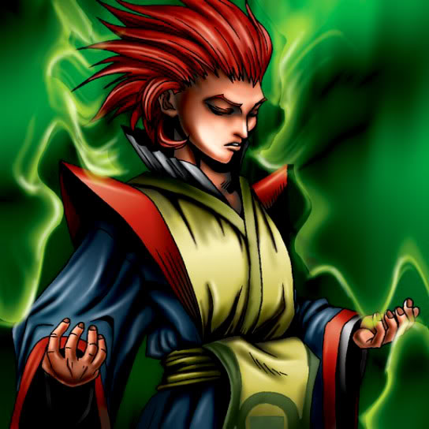

Vermillion Sparrow

STATS
ATK: 1900
DEF: 1500DECK COST
Deck Cost per Card: 34Fusion List (3 Possible Fusions)
- Vermillion Sparrow + Peacock = Crimson Sunbird
- Vermillion Sparrow + Spirit of the Books = Crimson Sunbird
- Vermillion Sparrow + Wolf = Flame Cerebrus